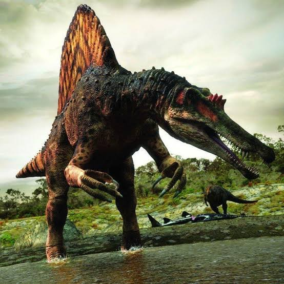
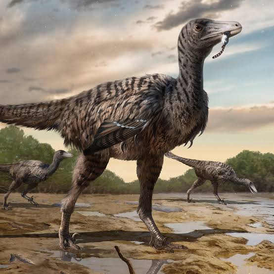
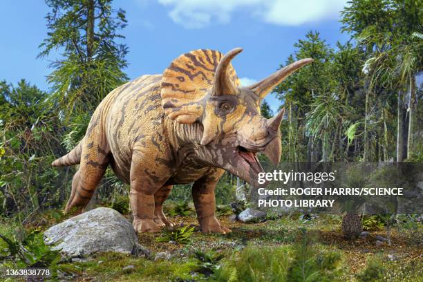

Spinosaurio aegyptiacus
Spinosaurus aegyptiacus fue descubierto en Egipto en 1912. Vivió hace unos 100 millones de años en ambientes acuáticos como ríos y pantanos. Los fósiles encontrados muestran una gran vela en su espalda y adaptaciones para nadar, lo que sugiere que cazaba peces y pasaba mucho tiempo en el agua.
Velociraptor
Velociraptor fue hallado en Mongolia en 1923. Vivió en zonas secas y desérticas hace unos 75 millones de años. Era un cazador muy rápido y ágil, con una garra curva en sus patas que usaba para atrapar a sus presas. Estudios recientes han revelado que tenía plumas, lo que muestra cómo han cambiado los fósiles con el tiempo.
Triceraptos
Triceratops fue descubierto en 1887 en América del Norte. Vivió hace unos 68 millones de años en zonas boscosas y llanuras. Era un dinosaurio herbívoro que no cazaba, pero usaba sus tres cuernos y su gran escudo en el cuello para protegerse de depredadores como el Tyrannosaurus rex.
